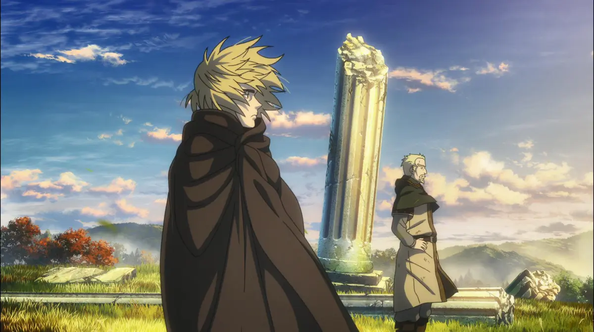
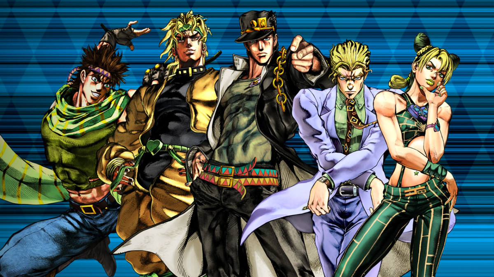

Novo Anime de One Piece!

A Netflix publicou um vídeo de 20 minutos detalhando os estágios iniciais de produção da animação e entrevistou a equipe principal por trás dele. A arte conceitual para o remake — que chegará no estilo anime sazonal e não como um lançamento semanal, o que significa essencialmente que muitos preenchimentos do anime original serão cortados — também foi lançada e pode ser vista abaixo.
A série foi anunciada em uma revelação surpresa em dezembro de 2023, e até o diretor Masashi Koizuka disse que ficou chocado quando ouviu falar dela pela primeira vez. "Eu ainda estava meio em dúvida", ele admitiu. "Começou com, 'Eles realmente iriam fazer isso?' Eu consegui falar com Oda-sensei, e foi quando eu soube que isso estava acontecendo de verdade.
Créditos: IGN Brasil.com"
📌 Atualização:
A Wit estúdio responsável pela produção já lançou algumas imagens oficiais
Vai Ter Mais Dragon Ball!

Uma grata surpresa para fãs do mundo todo! o novo anime de Dragon Ball Daima ganhou data de lançamento no serviço de streaming da Netflix.
Na nova trama, uma conspiração faz com que Goku e seus amigos sejam transformados em versões menores de si mesmos, no entanto, sendo lançados em um mundo misterioso e desconhecido.
Portanto Dragon Ball DAIMA estreia na Netflix a partir de 14 de outubro na Ásia e globalmente em 18 de outubro de 2024 — a data de lançamento pode variar de acordo com o país.
Créditos: AnimeNew.com
📌 Atualização:
Até o momento já foram lançados 2 episódios legendados de Dragon Ball daima!
VINLAND SAGA

Vinland Saga é um épico de ação e drama histórico que acompanha Thorfinn, um jovem guerreiro viking em busca de vingança pela morte de seu pai. Ambientada no turbulento período das invasões vikings, a história explora a brutalidade das batalhas, as complexidades da guerra, e a jornada de Thorfinn em busca de redenção, enquanto ele questiona o ciclo de ódio e violência que o rodeia.
Ver Na Crunchyroll
JoJos-Bizarre-Adventure

JoJo's Bizarre Adventure é uma série icônica conhecida por sua narrativa excêntrica e batalhas intensas, seguindo a linhagem da família Joestar ao longo de várias gerações. Cada arco apresenta um novo herói Joestar e suas aventuras fantásticas cheias de poderes sobrenaturais, stands criativos, e inimigos perigosos, misturando elementos de comédia, terror, e drama com um estilo visual único e ousado.
Ver Na Crunchyroll